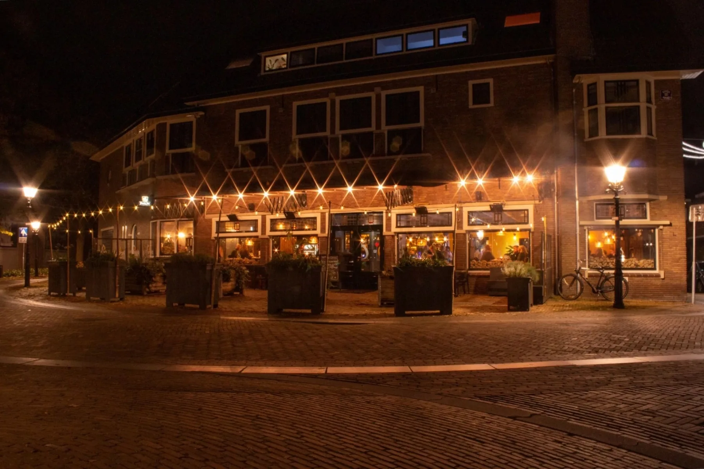
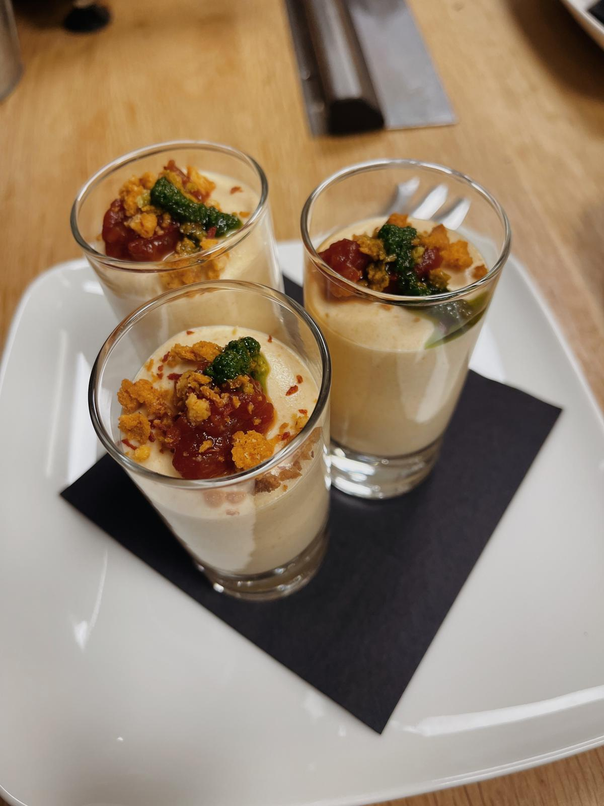
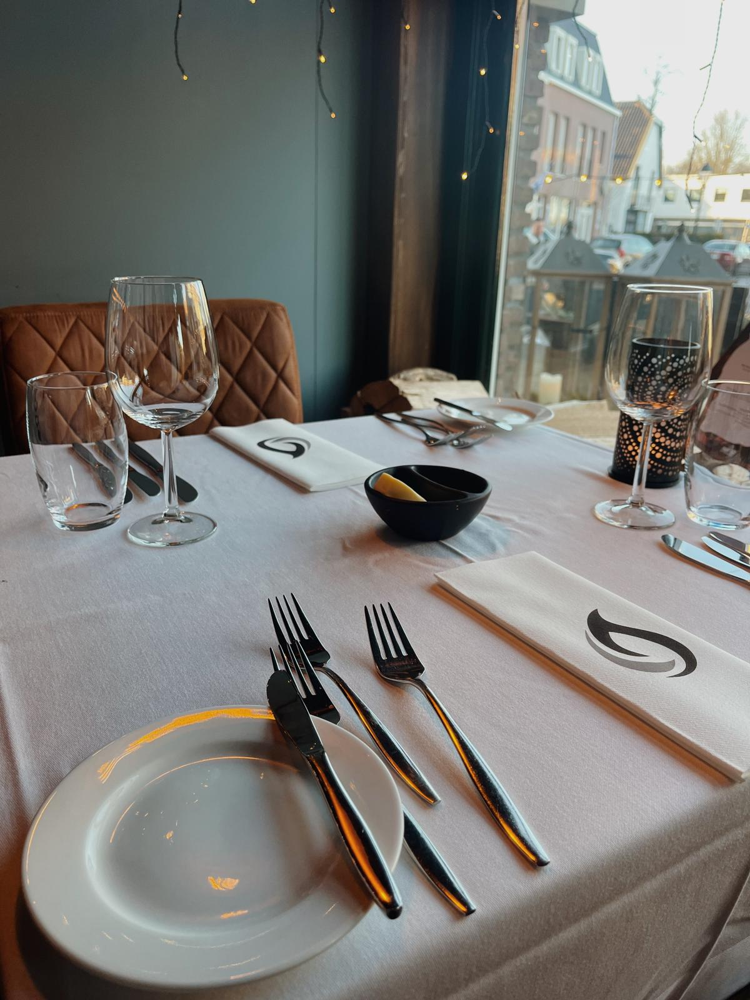
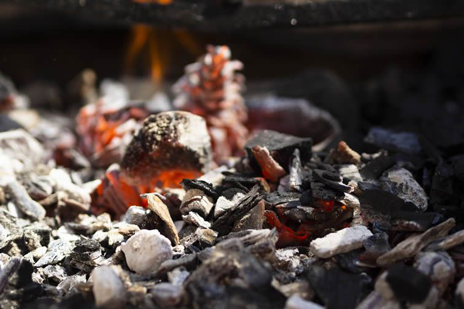
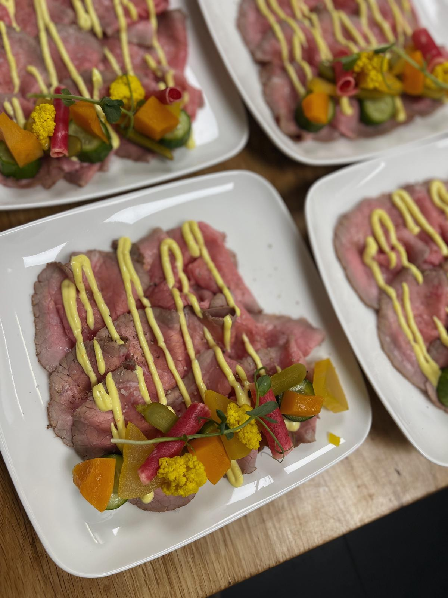
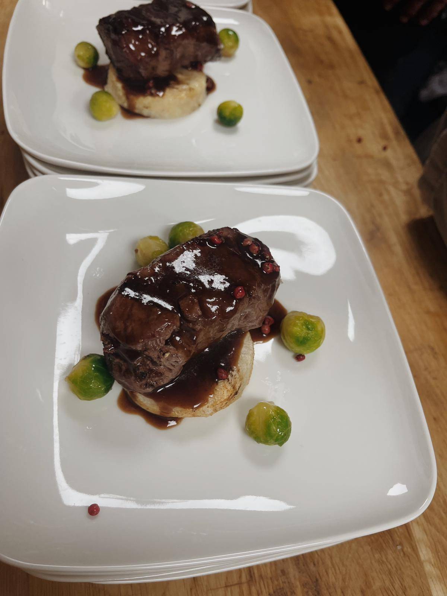
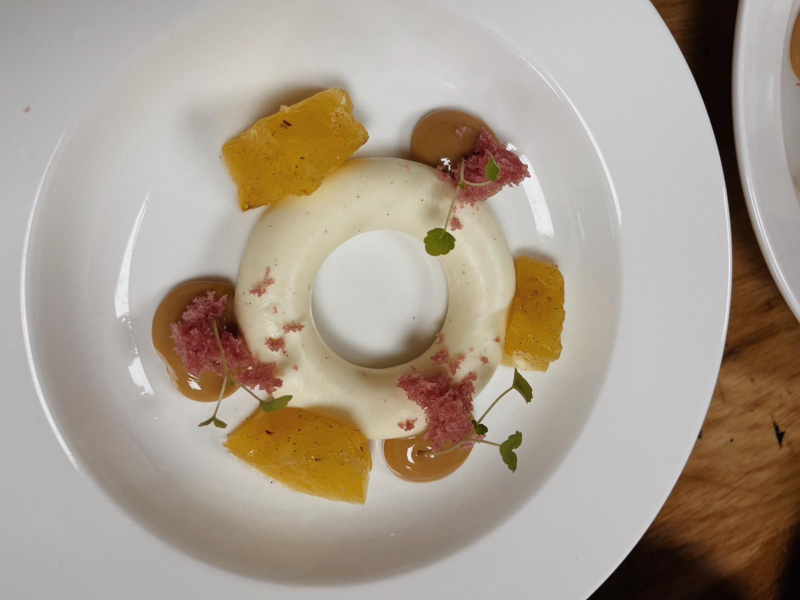
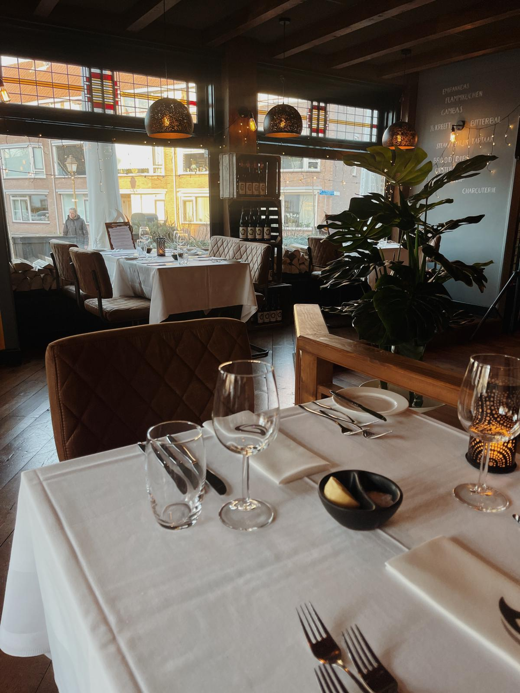

Voogdplein, Leerdam
Puur eten,
samen gedeeld,
bereid op houtvuur.
Grill share dining restaurant met een traditionele houtoven. Gerechtjes voor twee, om te delen met je tafelgenoten.
Woensdag t/m zondag vanaf 17:00 | 0345 745 078
Agenda rond de feestdagen
Even vooruit kijken voordat je reserveert.
- wo 16 decBesloten
- vr 18 decBesloten
- wo 23 decGesloten
- 24 t/m 26 decKerst: open vanaf 18:00
- 27 dec t/m 15 janGesloten in verband met schilderwerk
- za 16 janBesloten
- vanaf 2027Op zondag gesloten (uitgezonderd events). Open woensdag t/m zaterdag vanaf 17:00
Wat is shared dining?
Wij doen de dingen net even iets anders. In plaats van grote maaltijden voor iedere gast apart, maken wij gerechtjes. Elk gerecht is gemaakt voor twee personen en bedoeld om te delen met je tafelgenoten.
Bestel gerust meerdere dingen, zo proef je de hele avond verschillende smaken. Liever niet kiezen? Neem het shared verrassingsmenu en laat de chef de gerechten voor je samenstellen.
Naar de menukaart


Geen kant-en-klare pakjes, geen overbodige sausen.
Alleen houtvuur en verse ingrediënten uit de omgeving.
Eerder bij Puur Ted
- High Tea middag zo 25 januari 2026. Stapels lekkers, liters thee en live muziek (€ 50 p.p.)
- Utregse middag/avond zondag 26 oktober en zondag 6 oktober 2024. Muziek van Rik Hoogland, dresscode rood + wit
- Late Lunch februari en maart 2025 en zondag 25 mei. 10 gerechtjes in 3 rondes, 3 glazen wijn en koffie (€ 75 p.p.)
- Stand-up comedy met Stadspodium GO 27 maart 2025 en 24 oktober 2024 (Boban). 3-gangendiner plus voorstelling
- Proef de Herfst 26 november 2023, op ons terras met 't Veerhuys, de Blusbar en Kiky aan de Linge
- Classic Diner en Spring and Wine 2023. Diners met bijpassend wijnarrangement en live muziek
- Heeren van het Goede Leven laatste zondagen van juni t/m november 2022
Impressie: Classic Diner, februari 2023



Foto's van eerdere events: Boosfotos. Meer foto's op onze Facebookpagina.
Vrienden van Puur Ted
Vanaf januari 2027 kun je weer vriend worden, per stel of per persoon, voor een jaar. Vraag ons naar de prijs.
Mail ons over Vrienden van Ted- Diner in november: het verrassingsmenu van Ted, op een datum die je zelf kiest
- 5 drankmuntjes
- Voorrang bij onze events
- De Vrienden van Ted nieuwsbrief
- Je naam op de website en op het prikbord in de hal

Grill restaurant met een groen hart
Sinds 2019 staat Puur Ted in Leerdam bekend om de huiselijke sfeer, het gastvrije team en eerlijk eten. Achter het roer staan een trotse familie en een hechte vriendenkring: een klein team met passie voor puur koken.
We gaan terug naar hoe er vroeger gekookt werd, met een traditionele houtoven. Zo proef je de natuurlijke smaak van vis, vlees en groenten, zonder kant-en-klare zakjes. En net als vroeger eet je hier mét elkaar.
Onze groenten halen we bij een zorgboerderij, onze vruchtensappen bij een fruitkweker. Omdat we biologisch koken zonder onnodige toevoegingen, ben je hier ook met een glutenallergie of andere dieetwensen goed op je plek.
Bij ons ben je meer dan een gast. We behandelen je alsof je familie bent.
Openingstijden
| Woensdag | 17:00 – 23:00 |
|---|---|
| Donderdag | 17:00 – 23:00 |
| Vrijdag | 17:00 – 23:00 |
| Zaterdag | 17:00 – 23:00 |
| Zondag | 17:00 – 23:00 |
| Maandag en dinsdag | gesloten |
Binnenlopen kan tot uiterlijk 22:00. Eerste zondag van de maand gesloten. Vanaf januari 2027 open van woensdag t/m zaterdag. Bekijk ook de agenda rond de feestdagen.
Reserveren
Bel ons op 0345 745 078 of laat hier je wensen achter. Voor events is reserveren verplicht.
Bel 0345 745 078